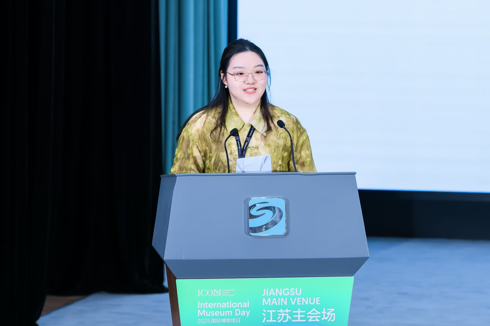

Publications
Exploration of Cultural Heritage Interpretation Pathways from the Perspective of Participatory Development Theory — A Case Study of Nanjing's "Digital Heritage" Project
Abstract
The introduction of innovative change in the interpretation practices in museums is essential in cultural heritage institutions to deliver the cultural heritage in an effective manner and fulfill the social value of cultural heritage. Another benefit of exploring new methods of heritage interpretation is that it not only responds to the needs of the public to be engaged in cultural activities but encourages new forms of interpretation. Basing on the outlook of the participatory development theory, the given study incorporates its main idea, the ability to turn the passive receivers into the active creators, in the examination of the cultural heritage interpretation routes. The research with the help of case analysis suggests a three-phase model of participatory interpretation, which presents a theoretically based and practically used framework of innovation of the cultural heritage interpretation techniques. The study targets the role of the multi-stakeholder intervention in supporting the shift of heritage interpretation towards sharing process rather than delivering outcomes. A hybrid approach of participatory inquiry and case study was taken, and an intensive two-year follow-up study of the project of Digital Heritage on the Nanjing Great Bao'en Temple Site Museum was performed. The results show that the participatory development theory offers a fundamental rationale of mutual interpretive engagements in cultural heritage which highlight the transition of closed functioning towards gradual openness to the populace as well as the maintenance of the quality of interpretation by moderate delegation of cultural authority. This method provides a radical model between theory and practice of innovation in heritage interpretation.
Introduction
I initiated research on this museum project in 2024, independently designing its research framework and methodology, which ultimately formed the basis of my undergraduate thesis. Over a two-year longitudinal study, I engaged in participant observation through three overlapping roles—contestant, curator, and event staff—while collecting extensive primary data via questionnaires and semi-structured in-depth interviews with audiences and internal personnel. This empirical evidence underpinned the development of my final interpretive model.
This research systematically analyzes how multi-stakeholder engagement at distinct stages of museum object interpretation catalyzes the excavation of the objects' multi-layered meanings, and proposes a three-stage participatory interpretation model. The model posits that, within the context of cultural institutions (e.g., museums) retaining interpretive sovereignty, museum object interpretation remains a closed process for the public. This closure situates visitors in an "absent context" between the interpretive process and the exhibited display, leading to the erosion of partial cultural agency. To address this impasse, the model centers on the logic of shared interpretive processes, emphasizing a shift from closure to openness and from one-way transmission to community co-creation. It argues that diverse communities can intervene at different stages of the interpretive process, thereby mitigating the absent context.
This experience has solidified my commitment to advancing scholarship in museum anthropology. Doctoral studies will afford me the sustained, coherent timeframe necessary to systematically investigate the topics that both perplex and captivate me.
Paper Structure

Key Outcomes
Exploring Innovative Development Pathways for Small and Medium-Sized Museums from the Perspective of Youth Co-Creation — A Practice Study Based on International Competitions

Abstract
Against the backdrop of rapid social transformation and development, museums are confronting unprecedented opportunities and challenges. As a critical component of the museum ecosystem, small and medium-sized museums (SMMs) are also grappling with multiple predicaments, including limited collections, suboptimal exhibition quality, and a scarcity of professional curatorial talent. Addressing these issues has emerged as a top priority in contemporary museum practice.
Youth groups, as the core driving force behind social change, hold central significance for alleviating the dilemmas faced by SMMs—researching youth communities and gaining insights into their thoughts and needs is therefore academically and practically imperative. Thus, implementing the concept of youth co-creation in museums has become a pivotal strategy for museum development. Youth co-creation encompasses diverse pathways, such as museum-school partnerships, competition organization, and volunteer recruitment. However, there remains untapped potential in the development of museum-centric competitions.
Drawing on the author's first-hand participation in China's inaugural international museum competition, Eternal Heritage: Immersive Cultural Heritage Maker Challenge, this study adopts a participatory observation approach to examine how such events, under the framework of youth co-creation, facilitate the construction of interdisciplinary teams, expand international perspectives, integrate cutting-edge technologies, and embed authentic youth viewpoints. Concurrently, these competitions provide platforms and opportunities for youth development, fostering a mutually reinforcing virtuous cycle that offers novel insights into resolving the current predicaments of SMMs.
The study concludes that international museum competitions effectively drive youth engagement in museum co-creation, serving as a viable and effective pathway to address the challenges faced by SMMs. This approach is therefore worthy of broader promotion and practical application in the SMM sector.